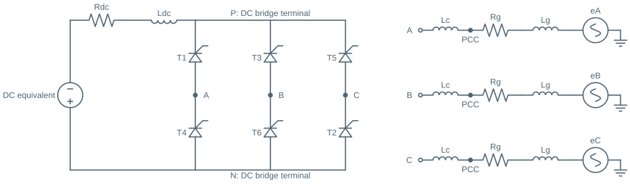
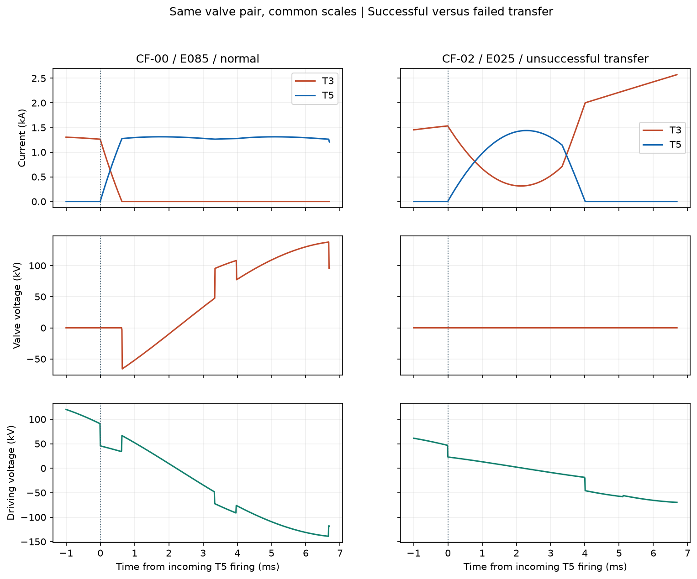
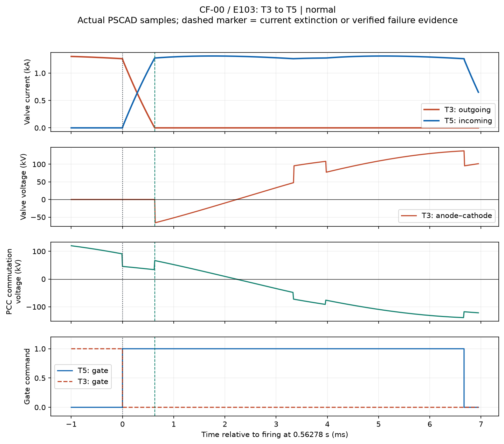
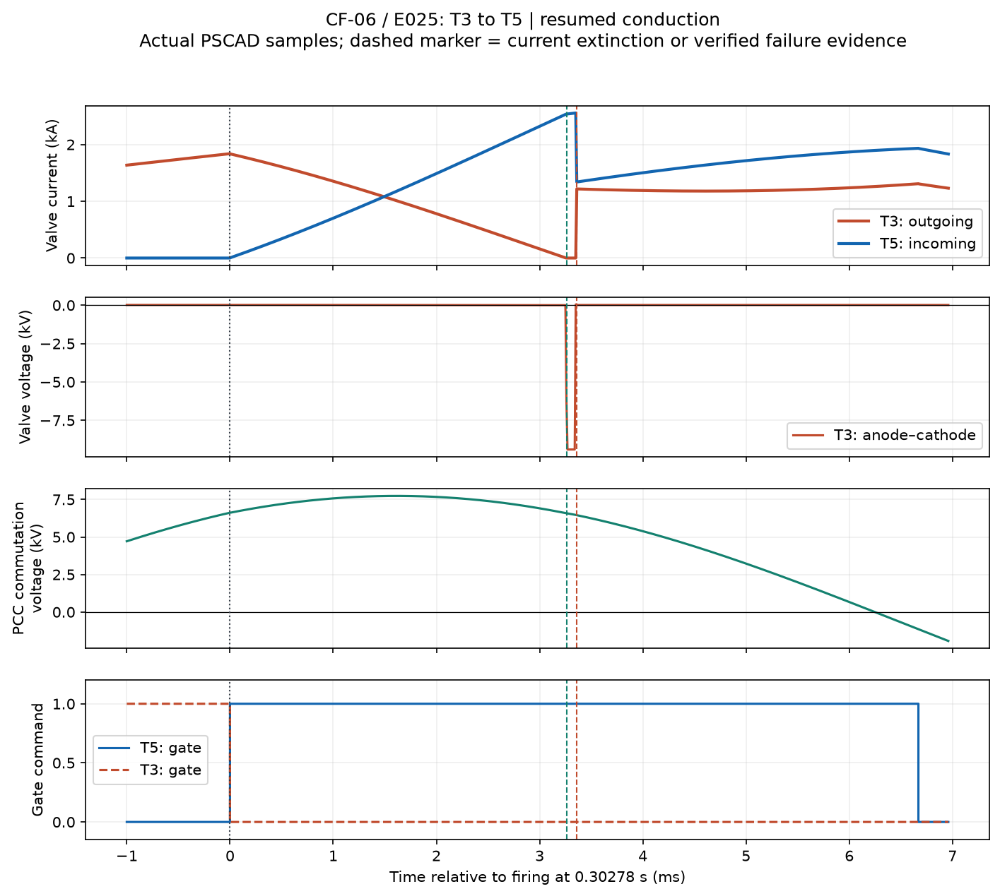
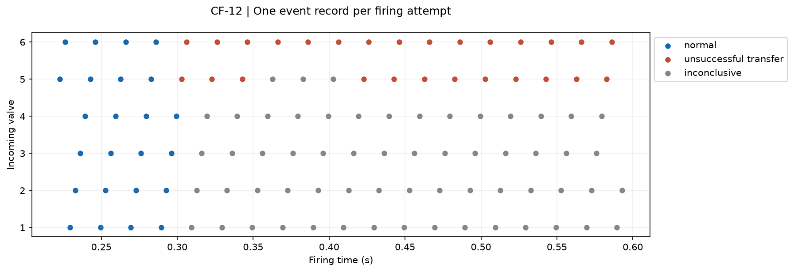
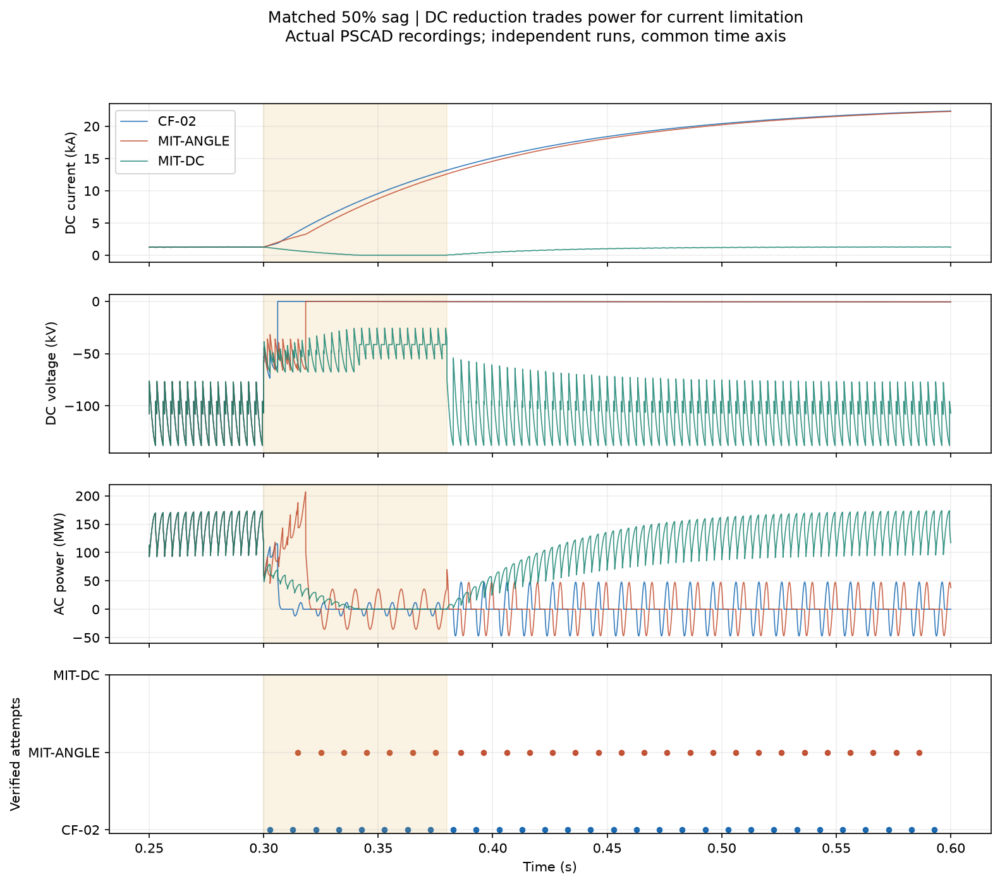

Engineering report · Public edition · 16 November 2026
HVDC-LCC inverter commutation failure
Original PSCAD simulations, valve-level evidence and an interactive learning laboratory
1. Scope and evidence
This laboratory studies an independently built, standalone six-pulse line-commutated HVDC inverter. A floating DC voltage equivalent supplies a smoothing reactor and six individually measured thyristors. A grounded three-phase Thevenin equivalent supplies commutating voltage. There is no rectifier station, DC transmission line, transformer, PLL, or complete HVDC control system.
31 accepted PSCAD simulations produced 671 verified failed firing attempts across independent recordings, including numerical and follow-up runs. This total is not a count of independent external disturbances. Every waveform originates in native PSCAD/EMTDC output; Python classifies and plots it, and the browser replays it.
The campaign contains CF-00 through CF-14, coarse and refined sag sweeps, inception-time variation, two 5 microsecond runs, matched mitigations, and recovery follow-ups. An initial model with an incorrect grounded DC return was rejected and excluded from these totals. The corrected model satisfies both upper- and lower-group current balance.
Public release source: GitHub repository. The online laboratory replays the same recordings as the offline package. Deployment checks are recorded separately from native simulation validation.
2. Six-pulse operation and polarity
The upper group is T1 (phase A), T3 (B), and T5 (C), carrying current from a phase toward P. The lower group is T4 (A), T6 (B), and T2 (C), carrying current from N toward a phase. The DC source is positive at N and negative at its reactor/resistor return. P and N float relative to ground. The source delivers energy while the bridge voltage P minus N is negative and the defined DC current is positive.

The firing sequence is T1, T2, T3, T4, T5, T6, repeating every cycle with 60 electrical degrees between commands. Transfers within either valve group are 120 degrees apart. A valve normally carries current for about 120 degrees, with finite overlap at each transfer. Two valves conduct away from overlap; three share current during a normal transfer. Gate command and measured conduction are displayed separately.
Phase A source voltage is sinusoidal at zero phase. T1 fires at 30 degrees plus its firing-angle reference. The controller uses sustained 120-degree gate windows and a fixed frequency clock. Source phase jumps do not instantaneously shift that clock. These choices are part of the experiment, not an industrial firing implementation.
Grid source current is measured positive toward the PCC, hence the minus sign in exported AC power. Positive values of both reported powers establish inverter operation.
3. Why commutation succeeds or fails
Firing makes the incoming thyristor eligible to carry current. The voltage difference between its phase and the outgoing phase drives current through the two participating commutation inductances. Current cannot change instantly. During overlap, outgoing current falls while incoming current rises. For the upper group the driving voltage is incoming-phase PCC voltage minus outgoing-phase PCC voltage; the lower-group sign is reversed.
\int_{t_f}^{t_c}v_{comm}(t)\,dt\approx 2L_c I_d
This area relation is an ideal illustration with approximately constant DC current and equal phase inductances. The actual network includes source impedance, changing current, and coupled phase voltages, so event classification uses measured waveforms instead of this approximation.
Alpha measures firing delay from natural commutation, beta is the corresponding advance, mu spans firing to outgoing-current extinction, and gamma is the outgoing valve's reverse-bias interval. The identity gamma = 180 - alpha - mu assumes a successful transfer and the balanced sinusoidal reference. Under faults or phase jumps, the measured interval is authoritative. Missing intervals are not filled with an invented angle.
A voltage sag reduces available driving area. A phase jump can move the voltage zero crossing. Larger DC current requires more current transfer. Source inductance prolongs overlap and alters PCC voltages. Harmonics reshape voltage area and zero crossings; they do not guarantee failure. A failure may retain outgoing current throughout the attempt, or may include extinction followed by resumed conduction.

The same T3 to T5 transfer in normal operation and the 50% sag, aligned at firing with common vertical scales.
4. PSCAD model, configuration and device limits
AC network
100 kV line-to-line RMS, 50 Hz
Grid per phase
0.3 ohm + 10 mH
Commutation inductance
10 mH per phase; no transformer
DC source
118 kV, floating, negative at the reactor return
DC series branch
5 ohm + 0.5 H
Nominal firing reference
140 degrees
Native thyristors
master:peswitch, Type = thyristor; Ron = 0.01 ohm, Roff = 100 Mohm; snubber disabled
Minimum extinction time
200 microseconds (3.6 degrees at 50 Hz)
Main integration / recording step
10 microseconds; representative sensitivity runs at 5 microseconds
Initialization
DC voltage ramps from 0.02 to 0.10 s; event analysis starts at 0.22 s
Default event
0.30 to 0.38 s; simulations end at 0.60 s, with longer recovery/persistent runs
The original controller and topology are stored in lcc_inverter.pscx; each experiment has its own LCC_*.pscx file. Installed PSCAD master components are referenced rather than redistributed. Native execution used PSCAD 5.1.0 Professional, mhi.pscad 3.1.2 and GFortran 8.1 (64-bit).
PSCAD's documented thyristor uses on/off resistance and current-zero turn-off, with a minimum extinction-time rule that can re-fire the device if forward voltage returns too soon. Reverse recovery current is idealized. Therefore these results demonstrate the selected EMT model's switching behavior, not semiconductor charge storage, thermal stress, or a hardware recovery limit. See the official thyristor model documentation.
Frequency, AC voltage, grid R/L, commutation inductance, DC voltage/resistance/reactor, firing references, fault resistance/type/timing, harmonics and recovery profiles are configurable. Optional SCR, current-reference and gamma-reference inputs calculate balanced-sinusoidal feedforward estimates. They do not introduce feedback regulation; measure the resulting operating point after running PSCAD.
SCR is approximately 21.12 for the nominal source and 3.54 for the weak-grid case. Commutation inductance is excluded from this source-SCR definition. Zero-sequence paths follow the independently grounded phase sources; the model does not reproduce a particular transformer winding connection.
5. Baseline validation
Over 0.50-0.60 s, mean DC current is 1.2919 kA, bridge voltage is -111.704 kV, DC power into the bridge is 144.309 MW and AC power into the grid at the PCC is 144.332 MW. Current ripple is 3.87% peak-to-peak; the change among four successive cycle means is 0.0081%.
All 112 analyzed baseline attempts complete normally. The gate sequence is correct. Recorded gate width ranges from 119.88 to 120.06 degrees because of sample quantization. Late-record measured overlap is 11.46 degrees and minimum reverse-bias interval is 28.80 degrees. The ideal angle balance closes within sampling and threshold resolution.
The disturbance comparisons share the same initialization. The 0.22-0.28 s pre-event current is still approaching its final value (about 1.245 kA versus 1.292 kA late in the baseline). This residual initialization drift is disclosed rather than called exact steady state at fault inception.

Measured successful current transfer, valve reverse voltage, driving voltage and gate commands.
6. Classification and counting rules
One record is created per incoming gate rising edge after 0.22 s. The window ends just before the next recorded gate edge in that valve group, including extra edges caused by reference changes. Already-established incoming conduction, a missing sustained post-gate current rise, or simultaneous group commands make the attempt inconclusive. The initially dominant measured current identifies the actual outgoing valve; a different outgoing valve than expected is flagged as an abnormal sequence.
Successful / reduced margin: outgoing current crosses the off threshold and establishes reverse voltage, the incoming valve carries current, a sustained reverse-voltage interval is measured, and outgoing current does not resume within the observation window. Less than 15 degrees is labeled reduced margin, not automatically failure.
Unsuccessful transfer: incoming current rises after a gate command, outgoing current never falls below its off threshold, and PCC driving voltage becomes negative while the outgoing valve remains conducting.
Resumed conduction: outgoing current falls below threshold, sustained reverse voltage is observed, and substantial outgoing current returns with a conducting valve voltage, without a new outgoing gate edge.
Inconclusive: evidence is missing, ambiguous, discontinuous, or outside the complete observation window. A near-zero current dip without reverse voltage is insufficient to establish resumed conduction.
The off threshold is the larger of 10 A and 2% of window median DC current; established conduction uses the larger of 50 A and 10%. Voltage tests use -500 V for reverse bias, +500 V for returning forward voltage, and -1 kV for driving-voltage reversal. Conditions persist for three samples. Incoming current must initially be below the established-conduction threshold and then rise above its initial value by that threshold. A current-threshold crossing is stored separately; reported completion and overlap require reverse-voltage evidence. These conservative engineering thresholds, finite windows and sampling affect event counts; counts are not universal fault probabilities. The browser's smaller ON-display threshold (1 A or 0.1% of instantaneous DC current) is separate and shown beside the valve readings.
Six consecutive successful attempts after clearing establish an observed recovery. A later verified failure marks one recurrence episode. Intervening inconclusive attempts do not erase the earlier successful interval, but they interrupt evidence of continuous stable operation. Stable recovery is reported only when at least six consecutive successful attempts continue through the last fully analyzable event; the final partial window is excluded.
Minimum gamma is taken only from valid measured intervals anywhere in the analyzed record, including before the disturbance. It is not a gamma estimate for failed transfers. Stable-sequence delay is measured from clearing, and does not require nominal power or nominal current to have returned.
8. Case-by-case physical interpretation
CF-00: Normal thyristor commutation
Undisturbed reference used to establish inverter operation.
No verified failure in the analyzed record. Final mean current is 1.292 kA. 0 verified attempts occur after clearing; 0 begin a verified recurrence episode after an established recovery interval.
CF-01: Reduced extinction margin without failure
Alpha is 150 degrees and DC source voltage is 131.2 kV, maintaining a comparable current. All transfers succeed at a reduced margin. This is not a one-variable alpha comparison.
No verified failure in the analyzed record. Final mean current is 1.262 kA. 0 verified attempts occur after clearing; 0 begin a verified recurrence episode after an established recovery interval.
CF-02: Balanced three-phase voltage sag
The source voltage is 0.50 pu during the event. The first failure is T3 to T5 at 0.30278 s; driving voltage reverses near 0.30508 s while T3 current remains positive. T5 current rises and then collapses; T3 never establishes reverse voltage.
First verified attempt: E025, T3 to T5, gate at 0.30278 s; Gate applied and incoming current rose, but outgoing current never extinguished Measured PCC commutation voltage reversed while the outgoing valve remained conducting. Final mean current is 21.954 kA. 22 verified attempts occur after clearing; 0 begin a verified recurrence episode after an established recovery interval.
CF-03: Single-line-to-ground fault
A-to-ground fault at the PCC through 2 ohm. Phase A commutation pairs are directly affected.
First verified attempt: E029, T1 to T3, gate at 0.31612 s; Gate applied and incoming current rose, but outgoing current never extinguished Measured PCC commutation voltage reversed while the outgoing valve remained conducting. Final mean current is 21.762 kA. 21 verified attempts occur after clearing; 0 begin a verified recurrence episode after an established recovery interval.
CF-04: Line-to-line fault
A-to-B fault through 2 ohm at the PCC reduces the voltage available to that phase pair.
First verified attempt: E025, T3 to T5, gate at 0.30278 s; Gate applied and incoming current rose, but outgoing current never extinguished Measured PCC commutation voltage reversed while the outgoing valve remained conducting. Final mean current is 21.978 kA. 22 verified attempts occur after clearing; 0 begin a verified recurrence episode after an established recovery interval.
CF-05: Double-line-to-ground fault
B- and C-to-ground faults, each through 2 ohm, affect multiple line-to-line voltages.
First verified attempt: E026, T2 to T6, gate at 0.30612 s; Gate applied and incoming current rose, but outgoing current never extinguished Measured PCC commutation voltage reversed while the outgoing valve remained conducting. Final mean current is 21.992 kA. 21 verified attempts occur after clearing; 0 begin a verified recurrence episode after an established recovery interval.
CF-06: Severe three-phase short circuit
Three-phase ground fault through 0.2 ohm per phase. A selected event includes reverse voltage followed by resumed conduction within about 180 microseconds, consistent with the configured simplified recovery-time rule.
First verified attempt: E024, T2 to T4, gate at 0.29945 s; Gate applied and incoming current rose, but outgoing current never extinguished Measured PCC commutation voltage reversed while the outgoing valve remained conducting. Final mean current is 22.006 kA. 21 verified attempts occur after clearing; 0 begin a verified recurrence episode after an established recovery interval.
CF-07: AC voltage phase-angle jump
A -25 degree source phase jump is applied and removed with the event; the fixed firing clock is unchanged. No PLL dynamics are represented.
First verified attempt: E048, T2 to T4, gate at 0.37945 s; Gate applied and incoming current rose, but outgoing current never extinguished Measured PCC commutation voltage reversed while the outgoing valve remained conducting. Final mean current is 18.788 kA. 21 verified attempts occur after clearing; 0 begin a verified recurrence episode after an established recovery interval.
CF-08: Sudden increase in DC source driving voltage
The DC source driving voltage increases by 30%, raising current indirectly. This is not a prescribed ideal-current-source step.
First verified attempt: E035, T1 to T3, gate at 0.33612 s; Gate applied and incoming current rose, but outgoing current never extinguished Measured PCC commutation voltage reversed while the outgoing valve remained conducting. Final mean current is 22.046 kA. 21 verified attempts occur after clearing; 0 begin a verified recurrence episode after an established recovery interval.
CF-09: Insufficient extinction margin
The firing reference is delayed to 168 degrees during the event. The loss of advance creates actual unsuccessful transfers; failure is not assigned from the reference angle alone.
First verified attempt: E027, T3 to T5, gate at 0.30434 s; Gate applied and incoming current rose, but outgoing current never extinguished Measured PCC commutation voltage reversed while the outgoing valve remained conducting. Final mean current is 19.848 kA. 22 verified attempts occur after clearing; 0 begin a verified recurrence episode after an established recovery interval.
CF-10: Weak AC grid
Grid inductance increases to 60 mH and a 0.8 pu sag is applied. Its pre-event current differs substantially from nominal; this is an illustrative weak-grid case, not a controlled proof that SCR alone causes a specific failure count.
First verified attempt: E025, T3 to T5, gate at 0.30278 s; Gate applied and incoming current rose, but outgoing current never extinguished Measured PCC commutation voltage reversed while the outgoing valve remained conducting. Final mean current is 21.875 kA. 0 verified attempts occur after clearing; 0 begin a verified recurrence episode after an established recovery interval.
A fifth harmonic of 0.25 pu of the fundamental source peak is added during the event. This tested distortion produces no verified failures; it lowers the valid margin, but more severe or different harmonics were not established.
No verified failure in the analyzed record. Final mean current is 1.285 kA. 0 verified attempts occur after clearing; 0 begin a verified recurrence episode after an established recovery interval.
CF-12: Repeated failures during one voltage sag
A 0.3 pu source sag lasts 120 ms. Multiple distinct incoming firing attempts fail during one disturbance and continuing abnormal operation.
First verified attempt: E025, T3 to T5, gate at 0.30278 s; Gate applied and incoming current rose, but outgoing current never extinguished Measured PCC commutation voltage reversed while the outgoing valve remained conducting. Final mean current is 19.773 kA. 18 verified attempts occur after clearing; 0 begin a verified recurrence episode after an established recovery interval.
CF-13: Recovery after one AC disturbance
The initial 0.35 pu sag experiment remains in continuing failure after clearing. It does not establish recovery followed by recurrence. Follow-up CF-13-R2 below supplies the controlled subsequent-failure example.
First verified attempt: E025, T3 to T5, gate at 0.30278 s; Gate applied and incoming current rose, but outgoing current never extinguished Measured PCC commutation voltage reversed while the outgoing valve remained conducting. Final mean current is 19.813 kA. 22 verified attempts occur after clearing; 0 begin a verified recurrence episode after an established recovery interval.
CF-13-R1: Recovery with prescribed DC restoration overshoot
Recovery with prescribed DC restoration overshoot. See the parameter manifest for the exact native configuration.
First verified attempt: E025, T3 to T5, gate at 0.30278 s; Gate applied and incoming current rose, but outgoing current never extinguished Measured PCC commutation voltage reversed while the outgoing valve remained conducting. Final mean current is 22.986 kA. 42 verified attempts occur after clearing; 0 begin a verified recurrence episode after an established recovery interval.
CF-13-R2: Recovery and DC restoration transient
Recovery and DC restoration transient. See the parameter manifest for the exact native configuration.
First verified attempt: E025, T3 to T5, gate at 0.30278 s; Gate applied and incoming current rose, but outgoing current never extinguished Measured PCC commutation voltage reversed while the outgoing valve remained conducting. Final mean current is 25.838 kA. 42 verified attempts occur after clearing; 1 begin a verified recurrence episode after an established recovery interval.
CF-14: Persistent severe AC disturbance
A 0.15 pu sag lasts 250 ms. High current and abnormal conduction persist after the first verified failure; later individual attempts are inconclusive under the conservative detector. There is no protection blocking logic, so the state is not called converter blocking.
First verified attempt: E025, T3 to T5, gate at 0.30278 s; Gate applied and incoming current rose, but outgoing current never extinguished Measured PCC commutation voltage reversed while the outgoing valve remained conducting. Final mean current is 22.994 kA. 0 verified attempts occur after clearing; 0 begin a verified recurrence episode after an established recovery interval.
INCEPTION-90: Sag inception shifted by 90 electrical degrees
Sag inception shifted by 90 electrical degrees. See the parameter manifest for the exact native configuration.
First verified attempt: E026, T4 to T6, gate at 0.30612 s; Gate applied and incoming current rose, but outgoing current never extinguished Measured PCC commutation voltage reversed while the outgoing valve remained conducting. Final mean current is 21.890 kA. 21 verified attempts occur after clearing; 0 begin a verified recurrence episode after an established recovery interval.
MIT-ANGLE: Mitigation: temporary firing advance
Mitigation: temporary firing advance. See the parameter manifest for the exact native configuration.
First verified attempt: E029, T1 to T3, gate at 0.31500 s; Gate applied and incoming current rose, but outgoing current never extinguished Measured PCC commutation voltage reversed while the outgoing valve remained conducting. Final mean current is 21.863 kA. 21 verified attempts occur after clearing; 0 begin a verified recurrence episode after an established recovery interval.
MIT-COMBINED: Mitigation: firing advance and DC voltage reduction
Mitigation: firing advance and DC voltage reduction. See the parameter manifest for the exact native configuration.
First verified attempt: E039, T5 to T1, gate at 0.34862 s; Gate applied and incoming current rose, but outgoing current never extinguished Measured PCC commutation voltage reversed while the outgoing valve remained conducting. Final mean current is 20.951 kA. 21 verified attempts occur after clearing; 0 begin a verified recurrence episode after an established recovery interval.
MIT-DC: Mitigation: reduced DC source voltage
Mitigation: reduced DC source voltage. See the parameter manifest for the exact native configuration.
No verified failure in the analyzed record. Final mean current is 1.270 kA. 0 verified attempts occur after clearing; 0 begin a verified recurrence episode after an established recovery interval.
NUM-BASE-5US: Normal thyristor commutation
Normal thyristor commutation. See the parameter manifest for the exact native configuration.
No verified failure in the analyzed record. Final mean current is 1.282 kA. 0 verified attempts occur after clearing; 0 begin a verified recurrence episode after an established recovery interval.
NUM-SAG-5US: Balanced three-phase voltage sag
Balanced three-phase voltage sag. See the parameter manifest for the exact native configuration.
First verified attempt: E025, T3 to T5, gate at 0.30278 s; Gate applied and incoming current rose, but outgoing current never extinguished Measured PCC commutation voltage reversed while the outgoing valve remained conducting. Final mean current is 21.953 kA. 22 verified attempts occur after clearing; 0 begin a verified recurrence episode after an established recovery interval.
REC-010: Recovery study: 10 ms sag
Recovery study: 10 ms sag. See the parameter manifest for the exact native configuration.
First verified attempt: E025, T3 to T5, gate at 0.30278 s; Gate applied and incoming current rose, but outgoing current never extinguished Measured PCC commutation voltage reversed while the outgoing valve remained conducting. Final mean current is 21.954 kA. 29 verified attempts occur after clearing; 0 begin a verified recurrence episode after an established recovery interval.
REC-NOMINAL: Recovery with DC suppression and nominal restoration
Recovery with DC suppression and nominal restoration. See the parameter manifest for the exact native configuration.
First verified attempt: E025, T3 to T5, gate at 0.30278 s; Gate applied and incoming current rose, but outgoing current never extinguished Measured PCC commutation voltage reversed while the outgoing valve remained conducting. Final mean current is 1.292 kA. 9 verified attempts occur after clearing; 0 begin a verified recurrence episode after an established recovery interval.
REC-SMOOTH: Recovery with nominal DC voltage restoration
Recovery with nominal DC voltage restoration. See the parameter manifest for the exact native configuration.
First verified attempt: E025, T3 to T5, gate at 0.30278 s; Gate applied and incoming current rose, but outgoing current never extinguished Measured PCC commutation voltage reversed while the outgoing valve remained conducting. Final mean current is 22.244 kA. 42 verified attempts occur after clearing; 0 begin a verified recurrence episode after an established recovery interval.
SW-SAG-065: Sag sweep: 0.65 pu
Sag sweep: 0.65 pu. See the parameter manifest for the exact native configuration.
First verified attempt: E029, T1 to T3, gate at 0.31612 s; Gate applied and incoming current rose, but outgoing current never extinguished Measured PCC commutation voltage reversed while the outgoing valve remained conducting. Final mean current is 21.902 kA. 21 verified attempts occur after clearing; 0 begin a verified recurrence episode after an established recovery interval.
SW-SAG-080: Sag sweep: 0.80 pu
Sag sweep: 0.80 pu. See the parameter manifest for the exact native configuration.
First verified attempt: E036, T2 to T4, gate at 0.33945 s; Gate applied and incoming current rose, but outgoing current never extinguished Measured PCC commutation voltage reversed while the outgoing valve remained conducting. Final mean current is 21.509 kA. 21 verified attempts occur after clearing; 0 begin a verified recurrence episode after an established recovery interval.
SW-SAG-085: Refined sag sweep: 0.85 pu
Refined sag sweep: 0.85 pu. See the parameter manifest for the exact native configuration.
First verified attempt: E041, T1 to T3, gate at 0.35612 s; Outgoing current reached its off threshold, sustained reverse voltage, and then resumed without a new gate Incoming current rose and outgoing valve voltage returned to a conducting value. Final mean current is 20.903 kA. 21 verified attempts occur after clearing; 0 begin a verified recurrence episode after an established recovery interval.
SW-SAG-0875: Refined sag sweep: 0.875 pu
Refined sag sweep: 0.875 pu. See the parameter manifest for the exact native configuration.
No verified failure in the analyzed record. Final mean current is 1.308 kA. 0 verified attempts occur after clearing; 0 begin a verified recurrence episode after an established recovery interval.
SW-SAG-090: Sag sweep: 0.90 pu
Sag sweep: 0.90 pu. See the parameter manifest for the exact native configuration.
No verified failure in the analyzed record. Final mean current is 1.305 kA. 0 verified attempts occur after clearing; 0 begin a verified recurrence episode after an established recovery interval.

CF-06: measured current extinction and a brief reverse-voltage interval followed by resumed conduction.
9. Repeated failure and recovery

Each marker represents one incoming firing attempt; multiple signals do not create duplicate events.
CF-13-R2 uses the same 50% AC sag as CF-02. After clearing at 0.38 s, a prescribed external DC-equivalent command reverses to -0.2 pu for 120 ms to force current suppression. This is an aggressive ideal source action, not a validated rectifier controller or VDCOL. At 0.50 s the command restores toward nominal with a temporary overshoot:
Successful attempts begin at 0.50612 s; the sixth confirms recovery at 0.52278 s. A later verified failed T6-to-T2 transfer is identified from the event record below. The first verified recurrence fires at 0.57278 s. No second AC fault is applied. The matched REC-NOMINAL run uses the same current-suppression interval but restores to exactly nominal voltage and maintains successful commutation.
The weaker suppression in CF-13-R1 and REC-SMOOTH does not restore commutation. These unsuccessful trials are retained to show that clearing alone and insufficient DC reduction do not guarantee recovery.
Valve-level evidence for the first verified failure after an established recovery interval in CF-13-R2.
10. Mitigation, sensitivity and tradeoffs

Same 50% sag and same initial source settings: compare firing advance, DC source reduction and the unmitigated case.
MIT-ANGLE advances the reference to 120 degrees during the sag. MIT-DC sets the DC source to 0.35 pu during the sag. MIT-COMBINED uses 125 degrees and 0.65 pu DC voltage. DC reduction prevents verified failures in the tested case and limits peak current to about 1.30 kA, but includes 14 inconclusive, low/discontinuous-current attempts and temporarily reduces power. Firing advance alone does not ensure recovery. These commands are scheduled from the event timer; no voltage-dependent current limiter or closed-loop gamma controller is implemented.
The coarse retained-voltage sweep includes 0.50, 0.65, 0.80 and 0.90 pu. Refined runs at 0.85 and 0.875 pu bracket a change from verified failures to none. This is a sampled boundary for an 80 ms event, the specified initialization and inception, fixed source settings and a 10 microsecond step; it is not a universal critical voltage. A 5 ms inception shift (90 electrical degrees) changes the recorded sequence and failure count. A 10 ms sag still leads to sustained abnormal current in this source equivalent.
Halving the time step from 10 to 5 microseconds preserves the baseline zero-failure result and the sag's 30 verified attempts. The baseline peak current changes by about 0.766%; the sag peak changes by 0.00233%. The first sag failure evidence time is unchanged, while minimum valid gamma differs by 0.09 degrees. Two time steps provide sensitivity evidence, not a complete convergence proof.
11. Reproduction, provenance and browser use
Native .inf/.out files and execution receipts are retained locally under results/raw. Shareable PSCAD copies redact OS-account author stamps only; release_project_hashes.json maps their hashes to the unchanged executed archives. SHA-256 hashes, timestamps, project filenames, PSCAD/compiler versions and channel units accompany processed outputs. The reader rejects invalid timing, hash mismatches, missing channels, non-finite values and incomplete durations. Processed arrays use SI units; two power channels are derived from measured voltages and currents. All 38 native channels remain available in the processed NPZ files.
Browser datasets retain every native sample from 0.20 s onward. Values are converted to float32, losslessly compressed, and decoded locally. Each case declares its maximum float-conversion error per signal. Overview drawing retains local extrema; event details use native samples. The website loads only selected cases. The two numerical sensitivity runs remain in the engineering results rather than the student selector.
Open index.html in a modern Chrome or Edge browser. Direct file opening was tested. Alternatively run the command below from the project root and open http://127.0.0.1:8765/. No PSCAD installation is needed for the learning pages. To reproduce simulations, install the Python requirements, open licensed PSCAD 5.1.0, determine its automation port and use the scripts below. See README.md for the complete sequence and the distinction between new execution and reprocessing.
Existing raw evidence is never overwritten. Use a clean results directory in a separate reproduction copy, or a new case identifier through the Python API. Final browser checks cover all eight modules, desktop/mobile layouts, controls, rendered equations, assessment feedback, exports and direct file opening. Source-profile validation checks each AC phase and the DC source independently in 97 pre-event, disturbance, suppression and restoration segments. Segment medians must remain below 1,000 V after excluding 1 ms at each boundary. Contradictory returned-current evidence remains inconclusive. Publication checks and audit resolutions are recorded in reports/publication_audit.md in the source repository.
12. Limitations and conclusions
The study establishes a physically consistent normal inverter operating point, unsuccessful current transfer under several disturbances, model-level resumed conduction, repeated failure attempts, and a controlled recovery-then-recurrence example. It also includes reduced-margin and harmonic cases without verified failure. The most useful educational evidence is the joint view of incoming current, outgoing current, valve voltage and driving voltage.
The fixed and scripted DC equivalent can drive unrealistically persistent large current because it contains no rectifier current controller, protective blocking, current limit, or energy constraint. Such current levels illustrate this model's behavior and must not be used as equipment ratings. Network strength changes the initial current unless the operating point is recalibrated. The ideal firing clock, grounded AC source configuration, omitted transformer/filter/control dynamics, simplified semiconductor recovery, short observation periods, thresholds, and limited numerical study bound the conclusions.
Use the eight laboratories to move from conduction sequence to commutation evidence, then compare disturbances and mitigation tradeoffs. Select parameters through recorded cases; the browser does not synthesize or interpolate new EMT responses.
13. References and licenses
PSCAD Automation Library: official automation entry point; installed API signatures were checked during construction.
Original project scripts, model topology, event detector, lessons and figures: MIT license. Bundled KaTeX and its fonts retain their license notices. PSCAD software and master libraries are not distributed.